楽々賃貸マニュアルです。画面の写真を見ながら、一つずつ覚えていきましょう。
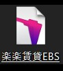
デスクトップにある「楽々賃貸」というアイコンを探します。見つかったら、ダブルクリックして開きます。
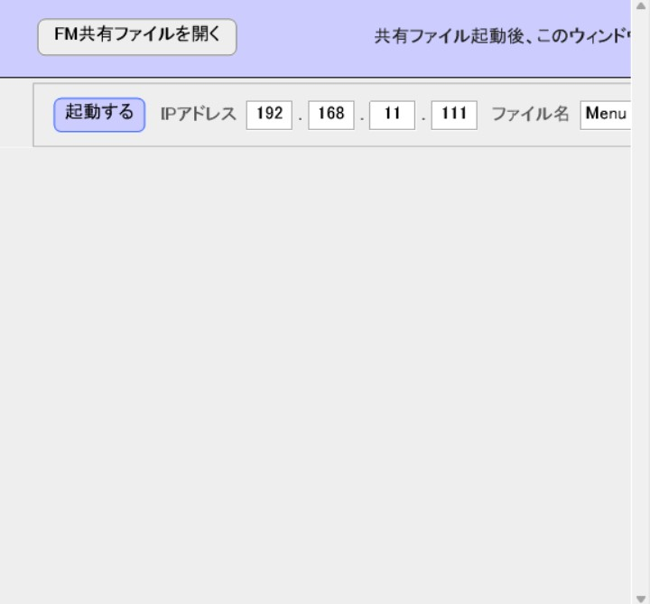
起動をクリックする
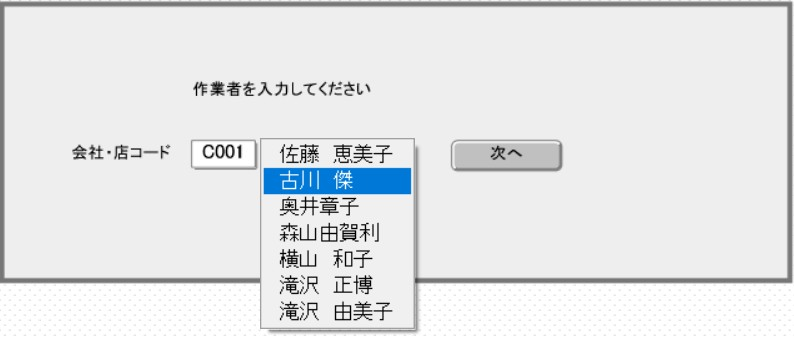
自分の名前をクリックして楽々にログイン
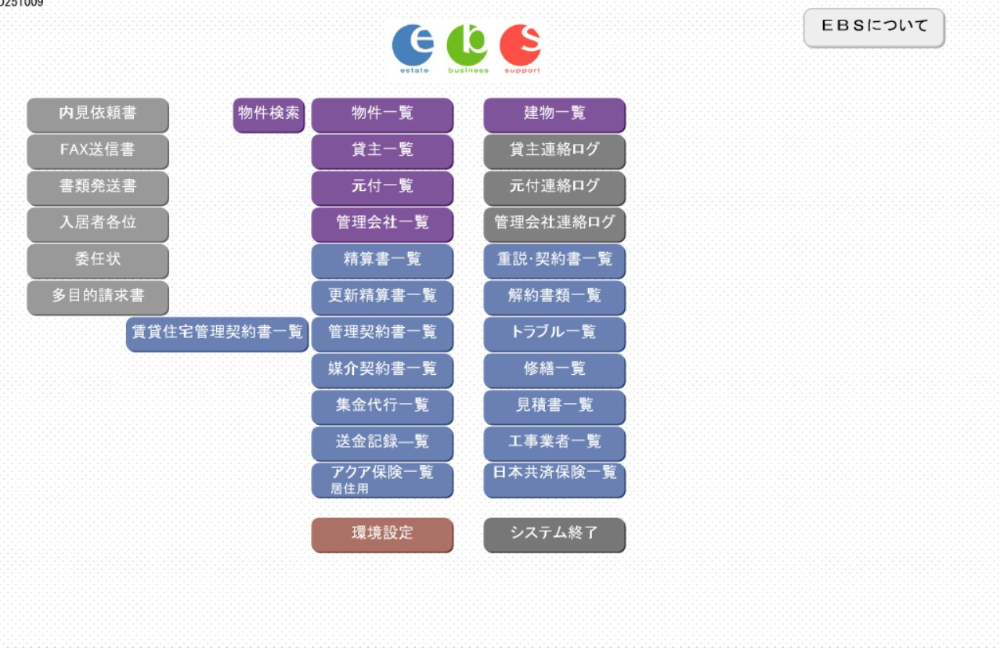
物件一覧を検索することが出来ます
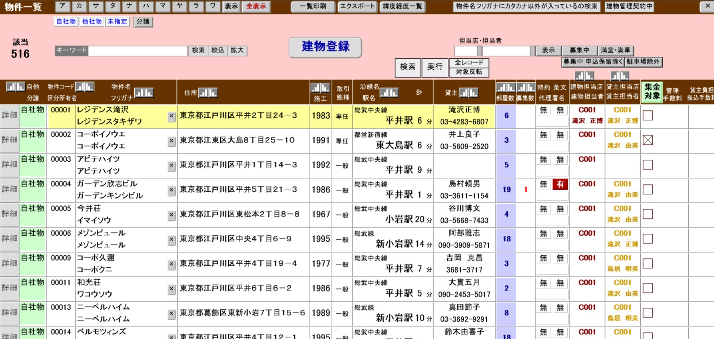
ここから物件の頭文字をクリックして物件を探します
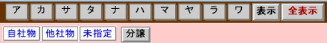
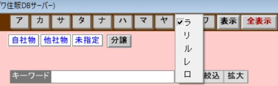
レジデンス滝沢を探しているのであれば「ら行のれ」を探します
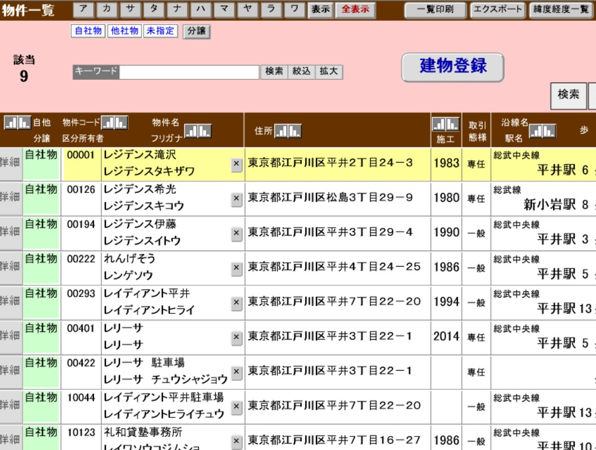
詳細をクリックするとその物件の情報へ切り替わります
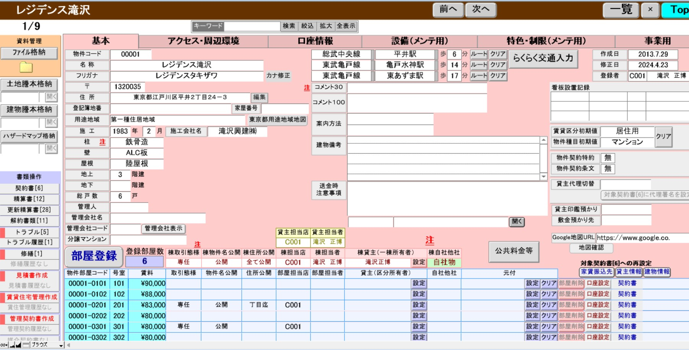
レジデンス滝沢の物件情報で部屋情報が見れるようになります
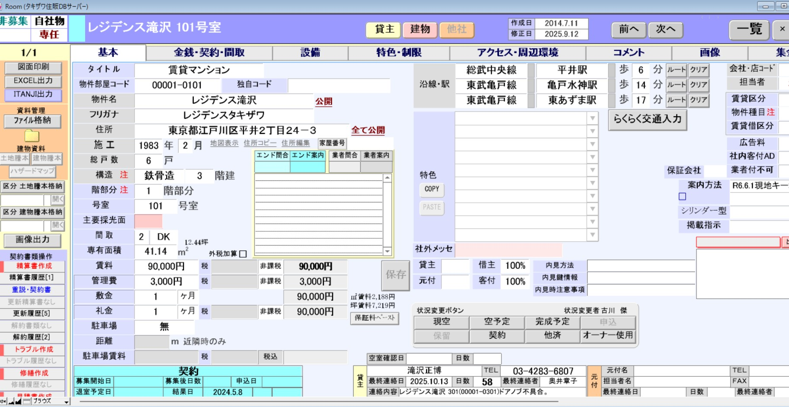
レジデンス滝沢101号室の詳細が見れるようになります。
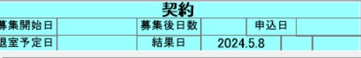
レジデンス滝沢101号室の「契約」となっているので、現在契約中の状況です
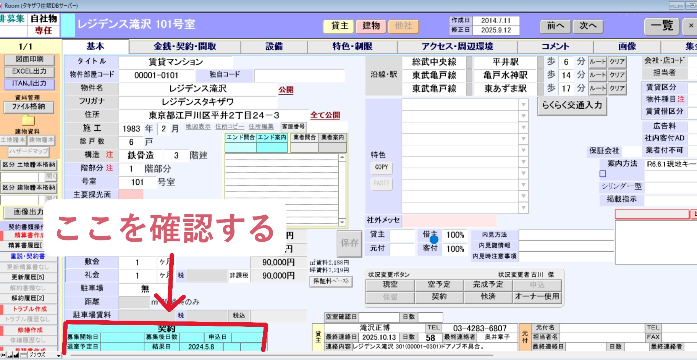
「契約」「現空」「空き予定」「申込」「他済」「オーナー使用」「保留」など、これに応じて電話対応します
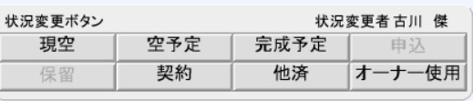
・現空 … 現在空室の部屋
・空予定 … 退去日が決まっている部屋（下に退去予定日が出ます）
・契約 … 現在入居者がいる部屋
・他済 … 他の不動産屋で契約している部屋
・大家使用 … 大家さんが貸し出しを止めている部屋